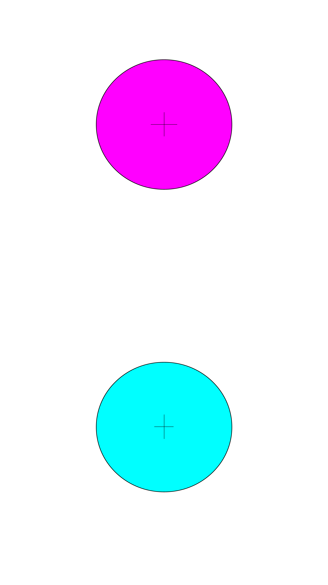
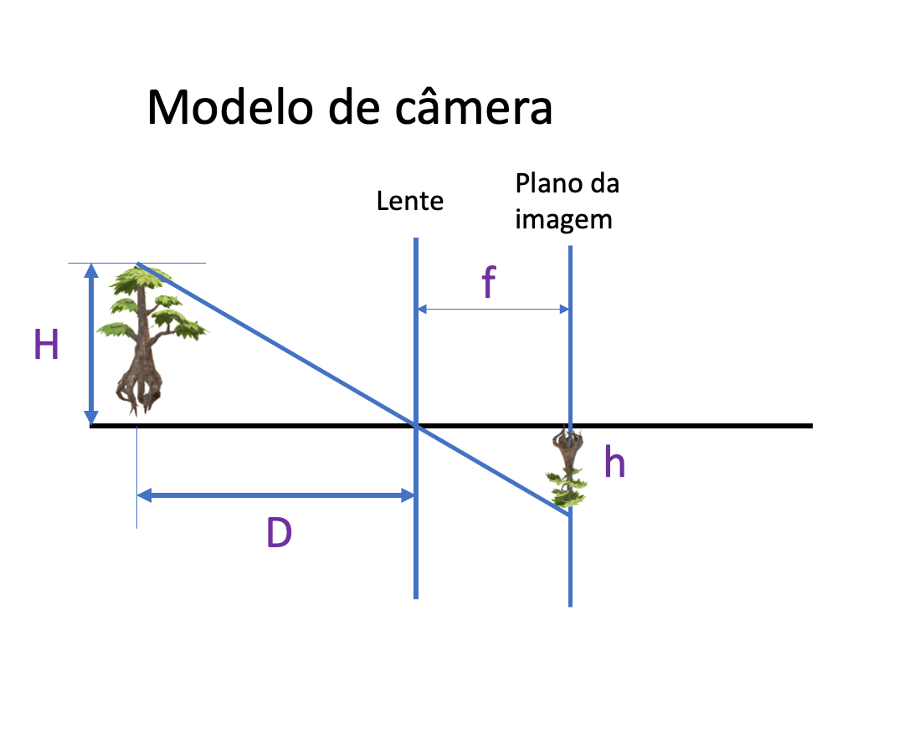

Entregável 4 de Robótica Computacional
Instruções gerais
Aviso 1: Sempre desenvolvam nos arquivos .py dos respectivos exercícios.
Aviso 2: Lembre-se de dar commit e push no seu repositório até o horário limite de entrega.
Aviso 3: Preencha o nome completo dos integrantes do seu grupo no arquivo README.md do seu repositório.
Aviso 4: Além de seu repositório, para todas as questões você deve gravar um vídeo do seu robô executando a tarefa. O vídeo deve ser feito gravando a tela do linux, tutorial, e deve ser postado no Youtube.
No arquivo README.md do seu repositório existe o campo Link do Vídeo onde você deve colocar o link do video no youtube. Certifique-se de que o vídeo está público e que o link está correto. NUNCA de commit no vídeo, somente adicione o link.
Configuração do Pacote (ROS 2)
- Não será necessário para este entregável.
Exercício 1 - Conversão 2D->3D (5 pontos)
Você deve ter uma folha com o padrão da imagem abaixo.
Dica: Se não tiver, é possível fazer também com um tablet ou smartphone

Neste exercício vamos aprender a fazer uma conversão 2D->3D, ou seja, estimar a distância da câmera até objetos capturados na imagem. Para isso, vamos entender o modelo pinhole.

A partir da geometria do modelo pinhole, podemos definir a seguinte relação entre a distância focal \(f\), o tamanho do objeto virtual \(h\), a distância da câmera ao objeto \(D\), e o tamanho do objeto real \(H\):
O objetivo deste exercício é estimar a distância \(D\) da SUA webcam até a folha.
Vocês vão trabalhar no arquivo ./ex1.py.
Este exercício solicita que vocês façam o seguinte:
-
Na função
runvocê deve fazer o seguinte:1.1. Converter a imagem para o modelo de cor HSV;
1.2. Obter as máscaras para os círculos
cianoemagenta;1.3. Calcular a area dos círculos
cianoemagenta;1.4. Se a diferença entre as áreas for maior do que 20000 (pode alterar esse valor) retorne a distância \(D\) entre a câmera e a folha como
-1. Caso contrário, calcule a média das áreas e o diâmetro do círculo.1.5. Escreva na imagem o valor da distância \(D\) e o diâmetro do círculo, utilize apenas duas casas decimais.
1.6. Entao
hsera o diâmetro do círculo eHserá 5.5 cm (diametro do círculo na folha do exemplo do profesor). -
Para a imagem
calib01.jpg, vamos realizar o processo de calibração da câmera. Utilize o valor da distância \(D\) entre a câmera e a folha descrito na imagem para calcular a distância focal \(self.f\) da câmera do professor (valor esperado é ~726). -
Para a imagem
teste01.jpg, utilize a distância focal \(self.f\) para calcular a distância \(D\) entre a câmera e a folha. (valor esperado é ~41 cm). -
Agora,
repita o processo de calibração para a sua câmera, tirando uma foto da folha a uma distância \(D\) conhecida. -
Mude a função
mainpara rodar a funçãorodar_webcame faça um vídeo mostrando a sua câmera e a imagem da folha, mostre a distância \(D\) e o diâmetro do círculo na imagem. -
Adicione o link do vídeo no README.md do seu repositório.
Exercício 2 - Linha Amarela e Cruzamento (5 pontos)
Neste exercício você vai trabalhar no arquivo ./ex2.py.
Primeiramente, faça o download do vídeo por meio do link a seguir salve na pasta img/q2 do seu repositório.
Na função main é possivel optar por testar com um frame, rodar_frame, ou rodar com o vídeo, rodar_video, comentando e descomentando a linha apropriada.
Este exercício solicita que vocês façam o seguinte:
-
Filtrar a cor amarela do frame e binarizar a imagem, mostre a mascara em uma janela.
-
Ajuste os valores da mascara para que apenas a linha amarela seja detectada em praticamente todos os frames.
-
Corte a imagem em 3 colunas e calcule a area da linha amarela em cada coluna.
-
Se duas colunas tiverem área maior do que
valor(você deve definir esse valor), então você deve escrever na imagem "Curva Detectada". -
Se três colunas tiverem área maior do que
valor(você deve definir esse valor), então você deve escrever na imagem "Cruzamento Detectado". -
Ajuste cuidadosamente os valores para que o seu programa não detecte curvas e cruzamentos onde não existem (falso positivo) e que detecte corretamente onde existem (verdadeiro positivo).
-
Faça um vídeo mostrando a execução do seu programa e adicione o link do vídeo no README.md do seu repositório.